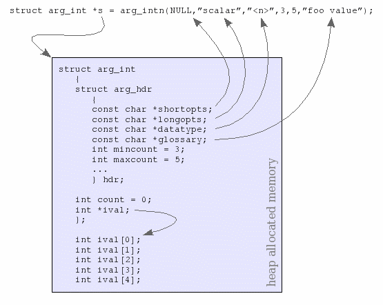

Stewart
Heitmann
sheitmann@users.sourceforge.net
Parsing a program's command line arguments has always been a distraction from the main programming task at hand. The argtable library simplifies the job by enabling the programmer to define the command line options directly in the source code as a static array of structs and then pass that array to argtable library functions which parse the command line accordingly. The values extracted from the comand line are deposited directly into user-defined program variables where they can be accessed by the main program. Argtable can also generate descriptions of the command line syntax from that same array for display as on-line help. The software is freely available under the terms of the GNU Library General Public License (LGPL).
myprog -abc --scalar=7 --verbose -o myfile <file> [<file>]
Argtable uses GNUgetopt to perform the actual parsing so it is 100% GNU compatable. It supports both GNU short options (as in -abc, -o myfile) GNU long options (as in –scalar=7, –verbose), as well as untagged arguments (as in <file> [<file>]). It does not support non-GNU command line formats, such as DOS /X /Y /Z style options.
How it works
Argtable provides a set of arg_xxx structs, one for each type of argument (literal, integer, double, string, filename, etc) that it supports and each struct is capable of handling multiple occurrences of that argument on the command line. Furthermore, each option can be given alternative short option (ie: -c) or long option (ie: --scalar) forms that can be used interchangeably. It fact, each option can even take multiple alternative short or long options, or both. Options can also be defined to have no option tag at all (ie: <file>) in which case they are identifed by their position on the command line (tagged options can appear anywhere on the command line).
To define a program's the command line options the user creates an arg_xxx struct for each type of argument required and collates them into an array which we call the argument table. The order of the structs in the argument table defines the order in which the command line options are expected, although the parsing order really only matters for untagged options. The argument table itself is just an array of void pointers, and by convention each arg_xxx struct has a known arg_hdr struct as its first entry that the argtable functions use to identify the structure.
By way of example, let us consider the arg_int struct which is used for command line options taking integer arguments, as in –scalar=7.
struct
arg_int
{
struct arg_hdr hdr;
int count;
int *ival;
};
The struct's first data member, hdr, holds the “private” data used by the argtable library functions. It contains things like the argument's tag string and so on. Direct access to this data is openly permitted, but it rarely necessary to do so. The ival member variable points to an array of integers that hold the values extracted from the command line and count gives the number of values held in the array. The storage for the ival array is allocated when the arg_int is constructed. This must done with one of the dedicated arg_int constructor functions:
struct
arg_int* arg_int0(const char* shortopts,
const char*
longopts,
const char* datatype,
const char* glossary);
struct
arg_int* arg_int1(const char* shortopts,
const char*
longopts,
const char* datatype,
const char *glossary);
struct
arg_int* arg_intn(const char* shortopts,
const char*
longopts,
const char *datatype,
int mincount,
int
maxcount,
const char *glossary);
All the argtable constructor functions work in the same manner; they allocate a block of memory that contains an arg_xxx struct at its head followed by storage for the local data for that structure, in this case the contents of the ival array. For this reason, you should never manually instantiate any arg_xxx struct yourself. Always use the constructor functions provided to allocate the structure and deallocate it using free when you are finished.
The three forms of the arg_int constructors represent the three most common uses of command line arguments: arg_int0 is for options that appear zero-or-once on the command line, arg_int1 is for options that appear exactly once on the command line, and arg_intn is for options that appear any number of times (within a given range). Thus arg_int0 and arg_int1 will both allocate one element to the ival array of the resulting structure, whereas arg_intn will allocate sufficient space for ival to store up to maxcount elements. The former are just specialised forms of the latter and are provided for convenience. Notice the arg_xxx0, arg_xxx1, and arg_xxxn naming convention applies likewise to all argtable constructor functions.
Continuing with our arg_int example, the following code fragment will construct a integer type option of the form --scalar=<n> that must appear on the command line between 3 and 5 times inclusive.
struct
arg_int *s;
s = arg_intn(NULL,”scalar”,”<n>”,3,5,“foo
value”);
Upon completion s will point to a memory block containing the arg_int struct followed by the ival array of 5 elements.

As shown in the diagram, the s->hdr structure keeps, among other things, references back to the string parameters of the constructor function. The s->count variable is initialised to zero as it represents the number of valid values that are stored in the s->ival array after parsing the command line. The size of the s->ival array is instead given by s->hdr.maxcount.
In this example we omitted a short option form by passing a NULL shortopts parameter to the constructor function. If instead we passed shortops as, say, “k”
s = arg_intn(“k”,”scalar”,”<n>”,3,5,“foo value”);
then the resulting structure would be the same but the option could be accepted on the command line as either -k<n> or –scalar=<n> equivalently. Indeed, we can go even further and define multiple alternative forms for both the short and long options. Alternative short options are given a string of single characters, whereas long options are given as a comma separated string. For instance,
s = arg_intn(“kKx”,”scalar,foo”,”<n>”,3,5,“foo value”);
will accept any of the following alternative forms on the command line: -k<n> -K<n> -x<n> --scalar=<n> --foo=<n>
|
struct arg_lit |
|
|
struct arg_dbl |
|
|
struct arg_str |
|
|
struct arg_rex |
|
|
struct
arg_file |
|
|
struct
arg_date |
|
Having constructed our arg_xxx structs we collate them into an argument table, as in the following example which defines the command line arguments:[-a] [-b] [-c] [--scalar=<n>] [-v|--verbose] [-o myfile] <file> [<file>]
struct
arg_lit *a = arg_lit0(“a”, NULL, ”the -a
option”);
struct arg_lit *b = arg_lit0(“b”,
NULL, ”the -b option”);
struct arg_lit *c =
arg_lit0(“c”, NULL, ”the -c option”);
struct
arg_int *scal = arg_int0(NULL, ”scalar”,”<n>”,
”foo value”);
struct arg_lit *verb = arg_lit0(“v”,
”verbose, ”verbose output”);
struct arg_file *o
= arg_file0(“o”, NULL,”myfile”, ”output
file”);
struct arg_file *file =
arg_filen(NULL,NULL,”<file>”,1,2, ”input
files”);
struct arg_end *end = arg_end(20);
void
*argtable[] = {a,b,c,scal,verb,o,file,end};
The “-a”, “-b”, “-c” and “-v|--verbose” options do not take argument values so we use arg_lit structs for them. We use the arg_lit0 form of the constructor function because these particular options only appear on the command line once or not at all.
The “--scalar=<n>” option takes an integer argument so its uses an arg_int struct. It too appears either once or not at all so we use the arg_int0 constructor function.
The “-o myfile” and “<file>” options both refer to filenames so we use the arg_file struct for them. We use the arg_file0 constructor function for the former because it appears either once or not at all, but the latter must appear either once or twice so we use the more general arg_filen constructor function for that. Notice that it is an untagged option as it does not take either short or long option strings.
The arg_end struct is a special one as it doesn't represent any command line option. Primarily it marks the end of the argtable array, but it also stores any parser errors encountered when processing the command line arguments. The integer parameter passed to the arg_end constructor is the maximum number of errors that it will store, in this case 20, any further errors are discarded and replaced with the single error message “too many errors”.
We will see how to use arg_end in error reporting soon but first we must ensure that all of the argument table entries were successfully allocated by their constructor functions. If they were'nt then there will be NULL entries in the argtable array which will cause trouble. We can use the arg_nullcheck function to check argtable for NULL entries in one step. It returns non-zero if any NULL entries were encountered up until the end of the table as marked by the arg_end structure.
if
(arg_nullcheck(argtable) != 0)
printf("error: insufficient
memory\n");
Presuming that went well, we may now initate any default values we wish to assign our optional arguments. We simply write our desired values directly into the arg_xxx structs knowing that argtable will only overwrite them if valid command line values are given in their place. Here we set the default values of 3 and “-” for the repeat and outfile arguments respectively.
repeat->ival[0]=3;
outfile->filename[0]=”-”;
Argtable does not require we initialise any default values, it is simply more convenient for our program if we pre-load defaults prior to parsing rather than retro-fit defaults to missing values later. However, you may prefer the latter.
Parsing the command line
Now our argument table is complete, we can use it to parse the command line arguments. We use the arg_parse function to do that, and it returns the number of parse errors it encountered.
nerrors = arg_parse(argc,argv,argtable);
If there were no errors then we have successfully parsed the command line and we can proceed with our main processing task, using the values to be found in our program's arg_xxx structs.
if
(nerrors==0)
{
int i;
printf(“-a = %d\n”,
a->count);
printf(“-b = %d\n”,
b->count);
printf(“-c = %d\n”,
c->count);
printf(“--verbose = %d\n”,
verb->count);
if (scal->count >
0)
printf(“--scalar=%d\n”,scal->ival[0]);
if
(o->count > 0)
printf(“-o %s\n”,o->filename[0]);
for
(i=0; i<file->count;
i++)
printf(“file[%d]=%s\n”,i,file->filename[i]);
};
Error processing
If the arg_parse function reported errors then we need to display them as arg_parse does not do so itself. As mentioned earlier, the arg_parse function stores the errors it encounters in the argument table's arg_end struct. We dont need to know the internal details of the arg_end struct, we simply call the arg_print_errors function to print those errors in the order they were encountered.
void arg_print_errors(FILE* fp, struct arg_end* end, const char* progname);
We pass the function a pointer to the argument table's arg_end struct as well as the name of the program which is prependend to each error message. The program name can be NULL if not required.
If
(nerrors > 0)
arg_print_errors(stdout,end,”myprog”);
This example illustrates the results of invoking our example program with incorrect command line options:
$
./myprog -x -y -z --scalar=hello --verby
myprog: invalid
option "-x"
myprog: invalid option "-y"
myprog:
invalid option "-z"
myprog: invalid argument "hello"
to option --scalar=<n>
myprog: invalid option
"--verby"
myprog: missing option <file>
The reason arg_parse function doesnt print error messages is so it can be called multiple times to parse the command line with alternative argument tables without having extraneous error messages displayed prematurely. Thus we may define separate argument tables for those programs that have mutually exclusive sets of command line options, trying each argument table in turn until we find a successful candidate. Should all argument tables fail to satisfy then we can choose to print the error messages from all of them, or perhaps only show the errors form the one that matched the closest. In any event, we control which messages are displayed.
Displaying the option syntax
If you want your program to display on-line help you can use the arg_print_syntax function to display the exact command line syntax as derived from an argument table. There are actually two forms of the function:
void
arg_print_syntax(FILE *fp, void **argtable, const char *suffix);
void
arg_print_syntaxv(FILE *fp, void **argtable, const char *suffix);
The latter displays a more verbose form of output, and is distinguished by the “v” at the end of the function name. Both functions display the syntax for an entire argument table, with the suffix parameter provided as a convenience for appending newline characters or any other string onto the end of the output. In the verbose form, each argument table entry displays its alternative short and long options separated by the “|” character followed by its datatype string. For instance,
arg_int0(“kKx”,”scalar,foo”,”<n>”,“foo value”);
will be displayed in verbose form as “[-k|-K|-x|--scalar|--foo=<n>]”. Whereas the standard form abbreviates the output by displaying only the first option of each argument table entry, as in “[-k <n>]”. The standard form also concatentates all short options in the argument table into a single option string at the head of the display in standard GNU style (eg: -a -b -c is displayed as -abc). The argument table from our previous example would thus be displayed in standard form as:
[-abcv] [--scalar=<n>] [-o myfile] <file> [<file>]
and in verbose form as:
[-a] [-b] [-c] [--scalar=<n>] [-o myfile] [-v|--verbose] <file> [<file>]
Notice that optional entries are automatically enclosed in square brackets whereas mandatory arguments are not. Futhermore arguments that accept multiple instances are displayed once per instance, as in “<file> [<file>]”. This occurs up to a maximum of three instances after which the repetition is replaced by an elipisis, as in “[<file>]...”.
The arg_print_syntax functions safely ignore NULL short and long option strings, whereas a NULL datatype string is automatically replaced by the default datatype for that arg_xxx struct. The default datatype can be suppressed by using an empty datatype string instead of a NULL.
Displaying the option glossary
The individual entries of the argument table can be displayed in a glossary layout by the arg_print_glossary function. It displays the full syntax of each argument table entry followed by each table entry's glossary string – the glossary string is the last parameter passed to the arg_xxx constructor functions. Table entries with NULL glossary strings are not displayed.
void arg_print_glossary(FILE *fp, void **argtable, const char *format);
The format string passed to the arg_print_glossary function is actually a printf style format string. It should contain exactly two “%s” format parameters, the first is used to control the printf format of the option's syntax string and the second is for the argument's glossary string. A typical format string would be " %-25s %s\n". The format string allows fine control over the display formatting but demands dilligence as any unexpected parameters in it will cause unpredictable results. Here is the results of calling arg_print_glossary on our earlier example argument table:
|
-a |
the -a option |
Sometimes you will wish to add extra lines of text to the glossary, or even put your own text into the syntax string generated by arg_print_syntax. You can add newline characters to your argument table strings if you wish, but it soon gets ugly. A better way is to add arg_rem structs to your argument table. They are dummy argument table entries in the sense that they do not alter the argument parsing but their datatype and glossary strings do appear in the output generated by the arg_print_syntax and arg_print_glossary functions. The name arg_rem is for “remark” and is inspired by the REM statement used in the BASIC language.
Cleaning up
At the end of our program we need to deallocate the memory allocated to each of our arg_xxx structs. We could do that by calling free on each of them individually, but the arg_freetable function can do it for us more conveniently.
arg_freetable(argtable,sizeof(argtable)/sizeof(argtable[0]));
It will step through an argument table and call free on each of its elements on our behalf. Note the second parameter, sizeof(argtable)/sizeof(argtable[0]), merely represents the number of elements in our argtable array. Upon completion of this function, all of the argtable array entries will have been set to NULL.
Hint: declaring global arg_xxx variables
ANSI C wont allow the the arg_xxx constructor functions to be placed in the global namespace, so if you wish to make your arg_xxx structs global you must initialiase them elsewhere. Here's a programming trick for using global arg_xxx structs while stull declaring your argtable statically.
#include <argtable2.h>
/* global arg_xxx
structs */
struct arg_lit *a, *b, *c, *verb;
struct arg_int
*scal;
struct arg_file *o, *file;
struct arg_end *end;
int main(int argc, char
**argv)
{
/* the global arg_xxx structs are initialised
within the argtable */
void *argtable[] ={
a
= arg_lit0(“a”, NULL, ”the -a option”),
b
= arg_lit0(“b”, NULL, ”the -b option”),
c
= arg_lit0(“c”, NULL, ”the -c option”),
scal
= arg_int0(NULL, ”scalar”,”<n>”, ”foo
value”),
verb = arg_lit0(“v”, ”verbose,
”verbose output”),
o = arg_file0(“o”,
NULL,”myfile”, ”output file”),
file =
arg_filen(NULL,NULL,”<file>”,1,2, ”input
files”),
end = arg_end(20),
};
...
return 0;
};
See the ls.c program included in the argtable distribution for an example of using this declaration style.
Compiling programs with argtable library
All source code that uses the argtable library must include the “argtable2.h” header function and link against the argtable2 library. A typical unix makefile for doing this would be:
CC =
gcc
CFLAGS = -I/usr/local/include -Wall -ansi
LDFLAGS =
-L/usr/local/lib
LDLIBS = -largtable2
myprog.o:
myprog.c
$(CC) -c $(CFLAGS) -o myprog.o myprog.c
myprog:
myprog.o
$(CC) $(LDFLAGS) myprog.o -o myprog $(LDLIBS)
Though the last two make rules are redundant as the default make rules suffice, so we could simplify the entire Makefile to just:
CC =
gcc
CFLAGS = -I/usr/local/include -Wall -ansi
LDFLAGS =
-L/usr/local/lib
LDLIBS = -largtable2
myprog: myprog.o
If you would prefer to statically link all the libraries to your application then add the “-static” switch to CFLAGS.
CFLAGS = -I/usr/local/include -Wall -ansi -static
If you wish to statically link only the argtable2 library while linking all other libraries dynamically, then treat the argtable static library as if it were an object file. The linker will statically link the object files within the library to your application.
myprog:
myprog.o
$(CC) myprog.o /usr/local/lib/libargtable2.a -o myprog
Example code
The argtable distribution comes with example programs that implement complete GNU compatable command line options for several common unix commands. See the argtable-2.x/example/ directory for the source code of the following programs: